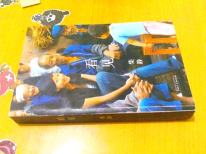

以下都是我買來讀過的書，近期準備搬家，所以將這些書免費贈送給喜歡讀書的朋友。
希望拿到書的朋友，不要轉手以廢紙價賣掉。真正的好書，該有更多的人懂。
以書會友。想拿書的朋友可以想好一句警句或格言，我爲你用鋼筆寫於扉頁，以作紀念。
贈書前言

書名：《看見》
作者：柴靜
出版：廣西師範大學出版社
頁數：四〇五
當熱度退去，是否還有人記得這些曾經熟悉的事件中，值得深思的意義？
柴靜在首章說，她關注新聞裡的人。她用一種幾近偏執的態度，報導著社會最陰暗的角落。被友人謔稱爲「火柴」的她，代表了新聞界僅有的良知。
如果連記者都對真相缺少應有的熱情，那麼誰來爲群眾呼喊？因此，我爲柴靜喝彩。

書名：《青樓秘典》
作者：葉一青 楊林山 王光照
出版：中國戲劇出版社
頁數：（二冊）一一九一
古今文人騷客之風流佚事，盡在本書。
書名：《正信的佛教》
作者：聖嚴法師
出版：深圳弘法寺（倡印）
頁數：一七八
正確地認識佛教，而不要人云亦云，更不要無憑妄論。
本書是我認爲最佳的佛教入門書籍。
書名：《我們的生活爲什麼這麼無奈》
作者：郎咸平
出版：東方出版社
頁數：一九一
書名：《科幻世界》
出版：《科幻世界》出版社
書名：《夏洛克‧福爾摩斯》
作者：柯南‧道爾
出版：（進口英文原著）
頁數：上冊一〇五九，下冊七三七
這是一本全英文原著，購買時我高估了自己的英文水平，同時也高估了自己對英文學習的熱情。「沒有時間」是文人扔書時通用的藉口。
我想對於一本書而言，拿到它，不一定非得讀完，即便僅讀過一章，不到十分之一，也已經是物有所值。
不知這本書能否送出去？
書名：《資本主義精神和社會主義改革》
作者：郎咸平 楊瑞輝
出版：東方出版社
頁數：一六五
這本書也是我頂薦的。雖然書本的標題和封面都不那麼友好，但是本書的第三章是我讀過的能把近代歐洲史講得最生動的文章，第二章是以往學過這麼多政治也學不到的馬克思思想的真義。
改革最終的目的是，實現民主和法制。如果想知道這個結論是怎麼嚴格論證的，就來讀此書吧。
書名：《簡化字繁體字對照字典》
作者：江蓝生 陆尊梧
出版：上海辭書出版社
頁數：五五三
江蓝生是著名的文字學專家，相信她所編的字典，對於繁體字初學者而言是極有助益的。
書名：《江南名剎香海寺》
編者：之農
出版：桐鄉市民間文藝家協會
頁數：一七四
一個個鄉間採集的富有趣味的歷史故事，爲我們打開了通往香火鼎盛的舊日之門。
書名：《釋迦牟尼佛傳》
作者：星雲大師
出版：（南京眾居士倡印）
頁數：五五四
本尊釋迦牟尼佛的生平紀事。
星雲法師字詞間傳達著慈悲與關懷，這是瞭解佛教的第一手資料。
書名：《請勿殺子墮胎》
主講：淨空法師 丁嘉麗
出版：香港佛陀教育協會
頁數：一八八
很好的一本書。本書通過對話的行式，透露了生命的本質意義。
淨空法師的親身經歷中，有不少奇幻的故事，所以本書非常精彩，真的。
書名：《聖經》
出版：中國基督教三自愛國運動委員會 中國基督教協會
頁數：舊約九四一 新約三一二
有興趣的朋友可先當作文學類的書來讀。
書名：《世說新語新校》
作者：李天華
出版：岳麓書社
頁數：五二九
本書序言中提到，《世說新語》一書，要校注是非常困難的，即便是考據學名家輩出的清朝，也無人敢挑戰這個艱巨的任務。
近日雖愛讀古文，但《世說新語》這種雜亂無章的體裁和似是而非的語義，不爲吾之所好，遂將其友情轉讓。
如果有人要讀《世說新語》，不如就讀這本吧。
書名：《唐詩三百首集解》
集解：王進祥
出版：頂淵文化事業有限公司
頁數：六一四
此書從臺灣購買，但觀其印刷質量，推測其並非正版。但是除了這本書之外，本頁面其他書都是毫無疑問的正版。
不要問我爲什麼要買盜版，我也不想買啊，我出的是正版的價錢（八十元人民幣），店家也聲稱其所賣均爲正版。
又推測，頂淵這個不知名的出版公司，印刷質量本來就差。
e201302012123@gmail.com
ejsoon@126.com
(+86) 15158888354
ejsoon@126.com
(+86) 15158888354